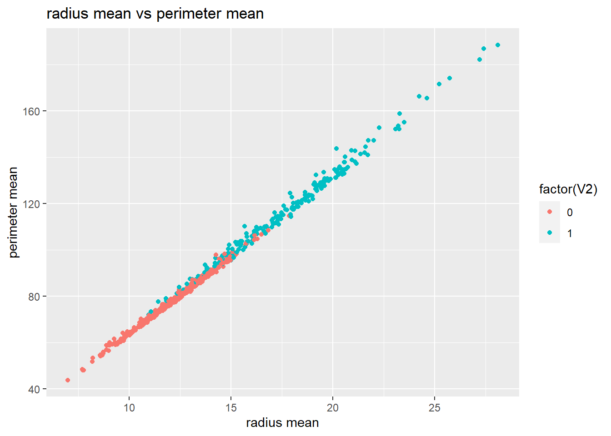
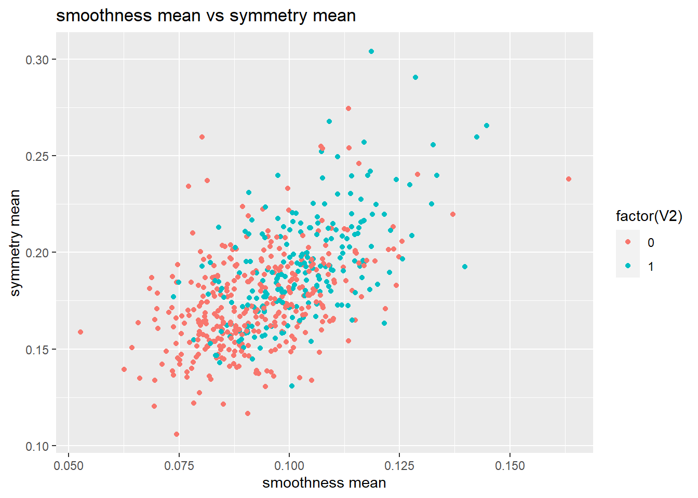

Breast_Cancer_Detection
I. Problem Statement or Data Sources
We use Wisconsin breast cancer dataset which can be obtained at UCI machine learning repository or at Kaggle website to build classification models.
The dataset consists of 569 observations of measurements that are taken from digitized images of fine needle aspiration cytology of breast masses.
It has 32 variables: one binary response variable, “diagnosis” (“M” for malignant or “B” for benign) and thirty-one independent variables .
These independent variables consist of one identification number variables and 30 numeric measurements of the mean, the standard error, and the worst (largest value) for 10 different characteristics of cell nuclei such as radius, texture, perimeter, area, smoothness, compactness, concavity, concave Points, symmetry, and fractal dimension .
II. Objective
We are interested in finding a model that can accurately predicting whether a patient has malignant or benign cyst breast cancer given measurements from fine needle aspiration test.
In other words, we are interest in a model with the lowest misclassification rate.

III. EXPLANATORY DATA ANALYSIS
IIIA. Correlation Matrix

- “V3 (radius mean)” is highly correlated to other independent variables such as “V5, perimeter mean” (0.99), “V6, area mean” (0.99), “V23, radius worst” (0.97), “V25, perimeter worst” (0.97), and “V26, area worst” (0.94).
IIIB. Histogram
Below are histograms of a response variable and some independent variables.

The histogram of the response variable, “diagnosis” shows that:
- we have more 0 value (which stands for “benign”) than 1 value (which stands for “malignant”).
- Thus, there are 357 observations (62.7%) for benign and 212 observations (37.3%) for malignant.
- Although it is understandable that there should be more benign result than malignant result, 37% test result indicating malignant is quite high. Three people out of ten people that undergo fine needle aspiration test have malignant cyst.
- Furthermore, the histograms of independent variables show that the shape of their distribution is not really perfect bell-shaped; it is skewed to the right. Measurement results are concentrated to lower values which is in line with the proportion of the response variable, “diagnosis” between benign and malignant.
IIIC. Scatter Plot between Response Variables and Predictors
Explore the relationship between response variable, ‘diagnosis’ (0 = benign & 1 = malignant) to indicate whether the breast mass is diagnosed as benign or malignant (0 = benign & 1 = malignant) against some predictors using Scatter Plots

Description 1

Description 2
- The scatter plot between “radius mean (V3)” and “perimeter mean (V5)” shows that there is strong positive linear relationship between them (its regression coefficient is almost one). The higher the “radius mean”, the higher the “perimeter mean”. The magnitude values of these variables closely relate to the test result whether a patient has benign or malignant cysts. The higher both “radius mean” and “perimeter mean” the more likely the patient has malignant cyst; thus, breast cancer.
- On the other hand, the scatter plot between “smoothness mean (V7)” and “symmetry mean (V11)” shows somewhat positive linear relationship between them (its regression coefficient is 0.56). The higher the “smoothness mean”, the higher the “symmetry mean”. However, the higher both “smoothness mean” and “symmetry mean” does not closely relate to whether the patient has malignant cyst. In this scatter plot, we can see that even though the test result of the patient shows both low “smoothness mean” and low “symmetry mean”, the patient is still diagnosed with malignant cyst; thus, breast cancer.
IIID. Box Plots between Response Variables and Continuous Predictors
Side-by-Side Boxplot is used to evaluate relationship between BINARY Response Variable against Quantitative Independent Variables
Moreover, we can create side-by-side box plot to explore the relationship between binary response variable, Y (‘diagnosis’) and quantitative predictors, X (‘radius se’, ‘area se’, ‘compactness se’ and ‘symmetry se’).


The box plots show that:
- There seems to exist difference in the median between 0 (‘benign’) and 1 (‘malignant’) for ‘radius se’, ‘area se’, and ‘compactness se’. The median between ‘benign’ and ‘malignant’ are separately apart.
- However, the median between ‘benign’ and ‘malignant’ for “symmetry se” is close to each other and their main distribution (from Q1 to Q3) also overlaps.
- The boxplot plots also show some outliers exist in dataset (dot above the maximum value in the box plots.
IV. CLASSIFICATION MODELS: Boosting Model
Contrasted to random forest model that builds an ensemble of deep independent trees, “global boosting machine (gbm) model builds an ensemble of shallow trees in sequence with each tree learning and improving on the previous one.” There are some tuning parameters for boosting model that needs to be selected to improve model performance such as number of trees, learning rate, tree depth and minimum number of observations in terminal nodes.
‘Reusable’ function for Boosting Model
Example code:
# Boosting Model Cross Validation
bc.gbm <- function(breastcancer.train, breastcancer.valid, y3, num.trees, j, lambda, i, inter.depth, z) {
breastcancer.cv.gbm <- gbm(V2~.,data = breastcancer.train,
distribution = 'bernoulli',
n.trees = num.trees[j],
shrinkage = lambda[i],
interaction.depth = inter.depth[z],
cv.folds = 10)
perf_gbm.cv = gbm.perf(breastcancer.cv.gbm, plot.it = FALSE, method="cv")
predgbm.valid <- predict(breastcancer.cv.gbm,newdata = breastcancer.valid[,-1],
n.trees = perf_gbm.cv, type="response")
yhat.glm <- ifelse(predgbm.valid < 0.5, 0, 1)
err.gbm <- mean(yhat.glm != y3)
return(err.gbm)
}
V. ANALYSE OPTIMUM MODEL
Parameter with lowest error (misclassified)
- Boosting (0.05,2000,2) = 0.03659341
Optimal Boosting method has the following tuning parameters:
- shrinkage = 0.05,
- n.trees = 2000, and
- interaction depth = 2
These parameter combinations habe the lowest mean validation error (0.03539823).
After we select the best model, we will retrain the model using training and validation subset.
1bc.gbm.best <- gbm(V2~.,data = breastcancer.trainvalid,
2 distribution = 'bernoulli',
3 n.trees = 2000,
4 shrinkage = 0.05,
5 interaction.depth = 2,
6 cv.folds = 10)Below is the estimated optimal number of iterations

Below is the important variables

Confusion matrix of Optimal Boosting Model
Example code:
library(caret)
confusionMatrix(as.factor(yhat.test.glm), as.factor(breastcancer.test$V2), positive = "1")
| Reference (Actual) | |||
|---|---|---|---|
| 0 | 1 | ||
| Prediction | 0 | 69 (TN) | 3 (FN) |
| 1 | 1 (FP) | 40 (TP) | |
Summary of Performance Matrix
Model Performance Metrics
| Metric | Value |
|---|---|
| Accuracy | 96.46% |
| 95% Confidence Interval | (91.18%, 99.03%) |
| Sensitivity (Recall) | 93.02% |
| Specificity | 98.57% |
| Precision (Pos Pred Value) | 97.56% |
| Kappa | 0.9242 |
| Balanced Accuracy | 95.80% |
From confusion matrix, we can calculate some diagnostic performance such as:
- Accuracy measures the number of samples correctly classified out of all the samples present in the test set. It is the measure of the model performance.
- Sensitivity measures the number of samples correctly classified as positive (“malignant”) when the disease (breast cancer) is present. It is true positive rate, expressed in a percentage.
- Specificity measures the number of samples correctly classified as negative (“benign”) when the disease (breast cancer) does NOT present. It is true negative rate, expressed in a percentage.
CALCULATION: Accuracy= (TP+TN)/(TP+FP+TN+FN)=(40+69)/(40+1+69+3)=96.46% Sensitivity= TP/(TP+FN)= 40/(40+3)=93.02% Specificity= TN/(TN+FP)= 69/(69+1)=98.57%
Create ROC Curve of Optimal Boosting Model
ROC curve plots true positive rate (sensitivity) against false positive rate (100% - specificity) for different cut off value. Thus, each point along the ROC curve telling us the sensitivity/ specificity pair corresponding to different cut off values (threshold).
With threshold = 1, we are at the lower left of the chart where we do not identify any positive cases (TPR = FPR = 0). As we decrease the threshold, we move along the curve to the right and the model classifies more positive cases. Thus, TPR and FPR increases.
With threshold = 0, we are at the most upper right side of the curve where the model classifies all data points as positive; thus, TPR and FPR = 1.0). If we prioritize high sensitivity (true positive) model, we choose cutoff value toward the top-left corner of the curve, where as if we prioritize high specificity (true negative), we choose cutoff value toward the top-right corner.
The above ROC curve tells us that with small decrease in threshold, the increase in true positive rate is very sharp. Then, after reaching certain threshold, the improvement in detecting true positive rate may not outweigh the cost of misclassifying positive case. Furthermore, the area under the curve (AUC) for our ROC Curve is 95.80% We may need to consult to medical expert to determine the threshold to get the optimum model.

Conclusion
From EDA, most values of the variables in Wisconsin breast cancer dataset are concentrated toward low values. It is understandable since there will be more “benign” cases than “malignant” case in the test results. As mentioned above, there are 357 observations (62.7%) for benign and 212 observations (37.3%) for malignant.
There are many correlated variables since 30 measurements (independent variables) are derived from 10 characteristics of cell nuclei such as radius, texture, perimeter, area, smoothness, compactness, concavity, concave Points, symmetry, and fractal dimension.
Out of seven classification models created in this report, boosting model (algorithm) gives the lowest validation error.
As can be seen in confusion matrix, the model performance is goods. The accuracy of the model is 96.49%. Further study can be conducted to use dimension reduction technique such as Principal Component Analysis (PCA) to fix Multicollinearity and conduct cross validation with more tuning parameters to check whether our best model is optimal model. * We can also consult to medical expert, to adjust cutoff value as the cost of misclassifying a patient is the patient’s life. Then, try using different cutoff value to get the optimal model.